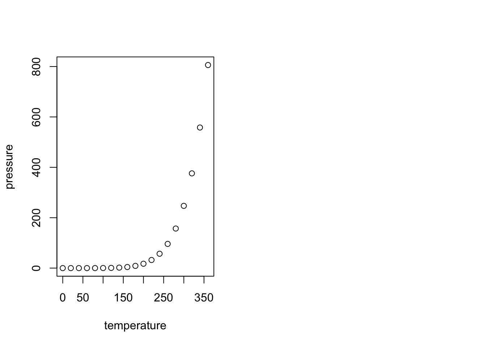
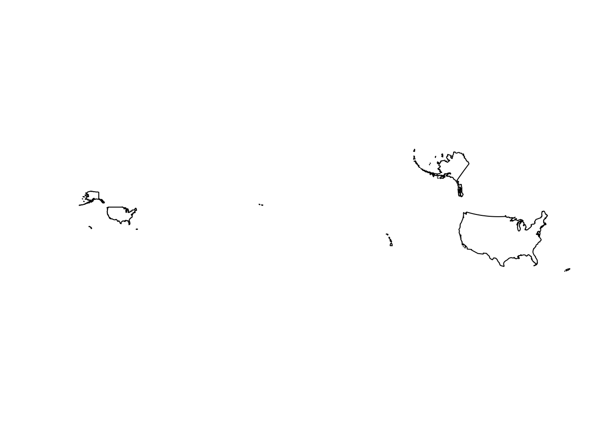
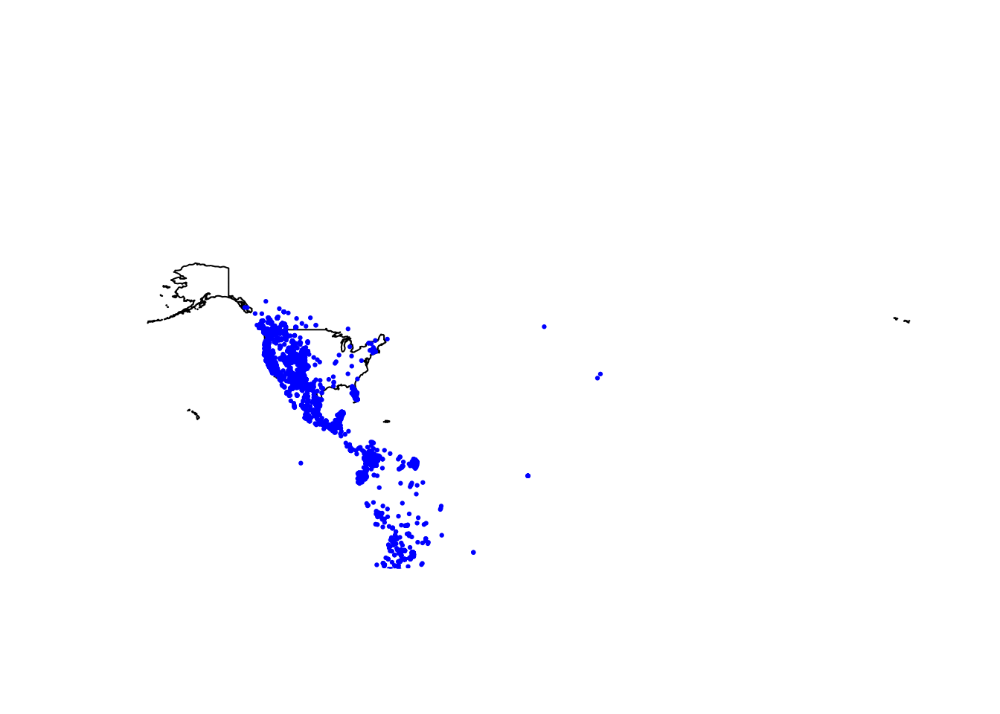
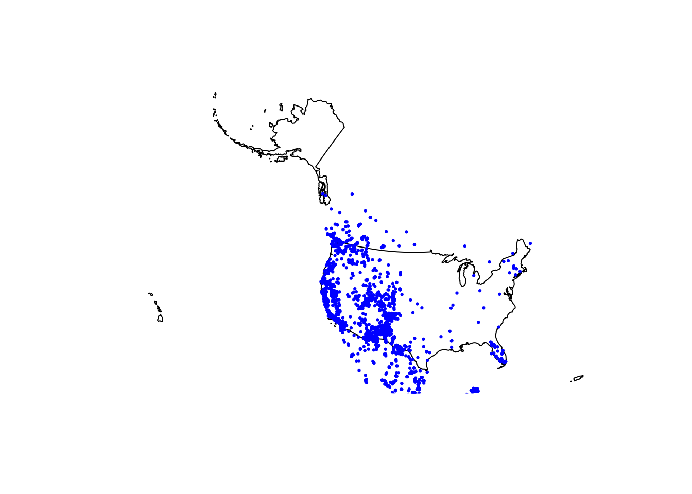
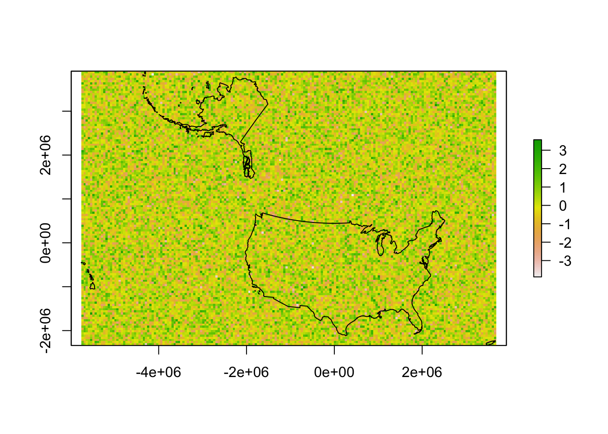
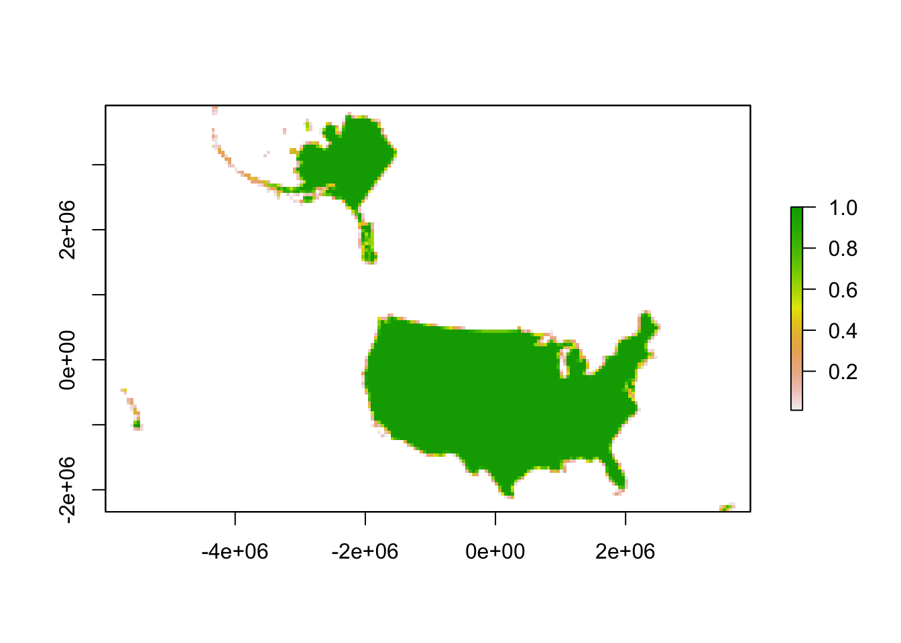
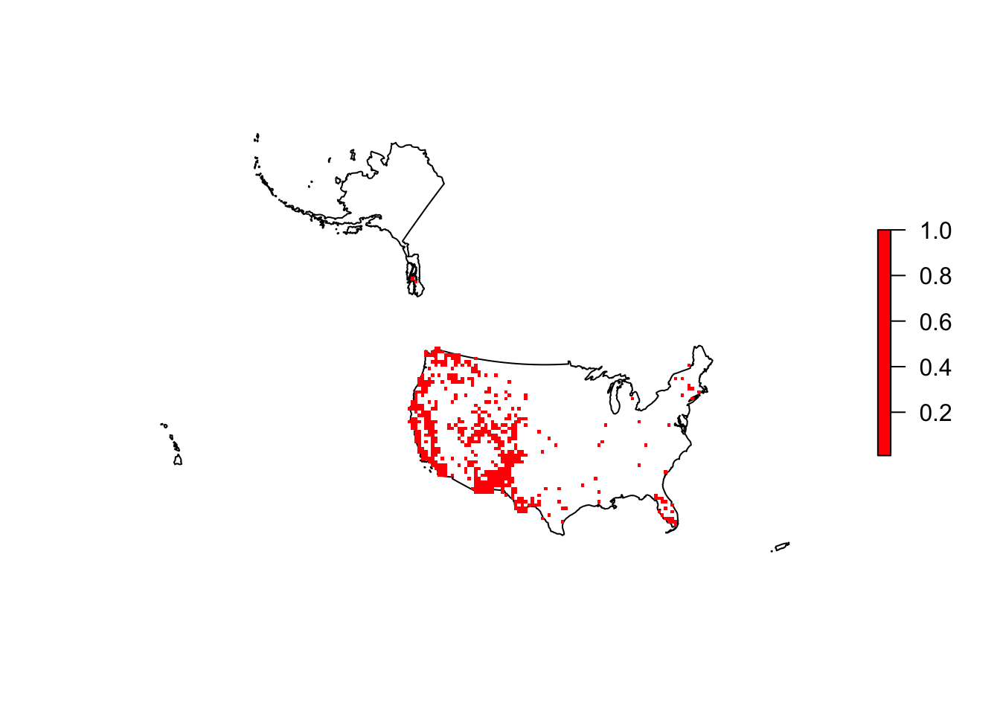
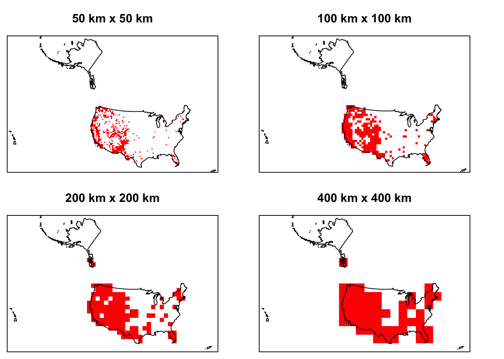

MSU Graduate Spatial Ecology Lab 2
Phoebe Zarnetske; plz@msu.edu
Sep 2016; rev. Sep 9, 2019, Aug 18-Sep 10, 2020, Sep 12, 2022
Lab 2: R Markdown, Intro to mapping in R & Scale
This lab has 2 Parts. You need to hand in Part 2 via the D2L Lab 2 Assignment Folder by start of Lab 3. When referring to the code below it may be more useful to use the .Rmd file linked above. You will need to be connected to the internet to complete this lab.
At the end of Lab 2 is Homework in preparation for Lab 3.
Part 1: R Markdown
R Markdown is an authoring framework for R code and output. R Markdown is part word-processor, part R output. It enables you to generate nice reports with R code, figures, tables, and text. It’s handy because it produces neat summaries of your work in HTML or PDF or other formats (Word docs). This document was made in Markdown via RStudio. From now on, you’ll be handing in all of your lab assignments as PDFs produced from R Markdown.
R Markdown is especially helpful with collaborative research and coursework, and is often used in supplemental materials with publications. If you haven’t already watched the R Markdown tutorial, you may want to refer to it when putting together your lab write-up: http://rmarkdown.rstudio.com/lesson-1.html (including “How it Works”, “Code Chunks”, and “Markdown Basics”). I recommend using “KnitR” in RStudio when you want to publish (i.e., click on “knit to HTML”, “knit to PDF”, etc. in the pull-down menu in RStudio).
When you click the Knit button in R Studio (looks like a knitting needle with ball of yarn) a document will be generated that includes both content as well as the output of any embedded R code chunks within the document.
Help with knitting to PDF
You may need to install a TEX program to knit to PDF. Try knitting first to PDF, if this doesn’t work here is a suggestion (this may take a while to download):
For Mac: MacTex: http://www.tug.org/mactex/ For PC: MikTex: http://www.miktex.org/2.9/setup some details on setting up with MikTex: https://latex.org/forum/viewtopic.php?t=7999
If you have trouble knitting to PDF directly in RStudio, you can also save to HTML and when you open the HTML in a browser, you can “save as PDF” or “print to PDF” directly from the browser. Just make sure what you end up handing in originated as a .Rmd file and presents the code and plots and lab writeup clearly - if it renders in HTML well, then you can hand HTML in (Note that D2L does not render HTML well inside D2L; as long as it works in a browser, it should be ok).
Interested in more detail on how to use RMarkdown and knitr?
Here is a great mini tutorial from EarthLab illustrating how to get started with RMarkdown in RStudio. Note that Lesson 2 is the intro to RMarkdown & Knitr: https://www.earthdatascience.org/courses/earth-analytics/document-your-science/intro-to-the-rmarkdown-format-and-knitr/
EarthLab’s Lesson 5 goes over how to knit to PDF or HTML. https://www.earthdatascience.org/courses/earth-analytics/document-your-science/knit-rmarkdown-document-to-pdf/
Some basics of RMarkdown are included below:
In RMarkdown, you can embed an R code chunk like this:
summary(cars)## speed dist
## Min. : 4.0 Min. : 2.00
## 1st Qu.:12.0 1st Qu.: 26.00
## Median :15.0 Median : 36.00
## Mean :15.4 Mean : 42.98
## 3rd Qu.:19.0 3rd Qu.: 56.00
## Max. :25.0 Max. :120.00summary(cars)results = 'hide' will omit the printout (suppressing the
summary of the dataframe cars) R Markdown can print or hide certain
portions of your code and output. This is helpful especially when you
don’t want to include long print-outs in a report. For lab assignments,
please don’t include long R printouts, e.g., printing an entire
dataset.
Including Plots
You can also embed plots, for example with the dataframe, pressure: 
echo = FALSE will not print the code beneath it; TRUE is
the default. You can also set a figure height and width in the brackets
also. Units = inches.

warning = FALSE will not print the R warnings beneath
it; TRUE is the default.
Part 2: Intro to mapping in R & Scale
R is ok for making maps - it’s getting better. If you want something super pretty or very complicated, it is probably better to go with QGIS (free) or ArcGIS (not free). However, you can make some nice maps in R with some basic commands, and because it’s all scripted, it’s useful for reproducible research.
##### STARTING UP R
# Clear all existing data
rm(list=ls())
# Close graphics devices
graphics.off()
# Set the paths for your work
output_path<-("output")
# if this folder doesn't exist, create it
if(!dir.exists(output_path)){
dir.create(output_path)
}
# Create the folders (directories) "data" and "lab2" - If they exist already, this
# command won't over-write them.
data_path<-(file.path("data","lab2"))
if(!dir.exists(data_path)){
dir.create(data_path,recursive = TRUE)
}
# If you previously saved your workspace and want to load it here, do so this way
# load(file.path(output_path,"lab2.RData"))
# With R Markdown, it is helpful to install packages locally before knitting (copy this into your R console before you knit)
for (package in c("raster","sp","rgdal","dismo")) {
if (!require(package, character.only=T, quietly=T)) {
install.packages(package)
library(package, character.only=T)
}
}
# Don't worry about rgdal warning; it works. It has to do with the eventual switch to other packages that depend on rgdal.
# If you get a warning that says: there is no package called 'raster' (or another package) type into your R console:
# package(raster)
# library(raster)
# If you haven't updated your packages in a while, see if any need updating.
# In RStudio: Tools: Check for Package Updates.Coordinate Reference Systems & Projection
Check out this helpful (and fun) video that explains projections and CRS: https://ed.ted.com/featured/uTE96JbJ To see why every map we view is relative, check out this interactive site: https://thetruesize.com/
Download and read in some spatial data. Spatial data require spatial reference. A common way of defining the spatial reference is with:
proj4 = projection information about the spatial data, and
CRS = coordinate reference systems containing projection, datum, and ellipsoid.
A CRS provides the key for how to interpret spatially referenced data given a specific geometry. It provides information about how to transform a three dimensional angular system into a 2-dimensional planar system. Great overview: https://www.nceas.ucsb.edu/~frazier/RSpatialGuides/OverviewCoordinateReferenceSystems.pdf for the proj4 strings see www.spatialreference.org or search on https://epsg.io/
# USA BOUNDARY SHAPEFILE from the US Census Bureau (https://www.census.gov/geographies/mapping-files/time-series/geo/cartographic-boundary.html); download it from the web [note that you may need to change the exdir location depending on where you want it to be saved]
if(! file.exists(file.path(data_path,'us.zip'))){
download.file("https://www2.census.gov/geo/tiger/GENZ2021/shp/cb_2021_us_nation_20m.zip", dest=file.path(data_path,"us.zip"), mode="wb")
}
unzip (file.path(data_path,"us.zip"), exdir = data_path)
# Read in the shapefile with rgdal package
us <- readOGR(file.path(data_path,"cb_2021_us_nation_20m.shp"))
# Note that shapefiles are actually a collection of many files. If you move a shapefile manually, be sure to copy all of the files.
# take a look at the shapefile info
summary(us)Uh oh! It’s not projected, is that a problem? The proj4string states that it’s a geographic coordinate system (rather than a projected coordinate system).
All Census Bureau generated shapefiles are in Global Coordinate System North American Datum of 1983 (GCS NAD83). Each .prj file contains the following: GEOGCS[“GCS_North_American_1983”,DATUM[“D_North_American_1983”,SPHEROID[“GRS_1980”,6378137, 298.257222101]],PRIMEM[“Greenwich”,0],UNIT[“Degree”,0.017453292519943295]]
So in this case the CRS is a geographic coordinate system (rather than a projected coordinate system). Geographic systems include angular unit of measure, a prime meridian, and a datum (based on a spheroid). Latitude and Longitude describe any location in geographic coordinate system, in unites of degrees. If we wanted to do some exact measurements of distances or areas, it would be better to use a projection. This is because projections transform a 3D surface (Earth; a sphere) into a 2D surface and maintain constant lengths and angles, preserving area. Geographic systems have different lengths and and angles depending on the location within the spatial data. Google Maps uses a Web Mercator projection (flat Earth): https://en.wikipedia.org/wiki/Web_Mercator_projection.
Projecting Data
## This defines the CRS for the US National Atlas Map Projection
us.atlas.proj <- CRS("+proj=laea +lat_0=45 +lon_0=-100 +x_0=0 +y_0=0 +a=6370997 +b=6370997 +units=m +no_defs")
# set a plotting area for 2 side-by-side subplots
par(mfcol=c(1,2))
# plot the shapefile in the first subplot
plot(us)
# project to US National Atlas equal-area projection
us.equal <- spTransform(us, us.atlas.proj)
# plot the other shapefile in the second subplot
plot(us.equal)
Reading in data from gbif.org - the Global Biodiversity Information Facility
Add some point data for a species from GBIF.org. Get GBIF data with function gbif() from the dismo R package or choose your own favorite organism (in the US). Check the GBIF site first to see how many occurrences you’ll be importing http://www.gbif.org/occurrence/search - enter your species name in the search window. Click on “filter” and scientific name. Puma concolor has 17000+ records, and may take a few mins to import. Choose a different species in the US with a smaller number if you don’t want to wait so long (but it’s only a few mins).
# Take a look at the command "gbif" to see what options exist for importing data.
?gbif
# Import the occurrence data on Puma concolor.
puma.gbif <- gbif("Puma", "concolor", geo=T)
# plot occurrences
par(mfcol=c(1,1))
plot(us, main="Puma concolor observations")
points(puma.gbif$lon, puma.gbif$lat,
pch=19, cex=0.3, col="blue")
# important: longitude goes first and hence the order
# lat=column 114; lon=column 127
names(puma.gbif) ## [1] "acceptedNameUsage"
## [2] "acceptedScientificName"
## [3] "acceptedTaxonKey"
## [4] "accessRights"
## [5] "adm1"
## [6] "adm2"
## [7] "associatedOccurrences"
## [8] "associatedReferences"
## [9] "associatedSequences"
## [10] "basisOfRecord"
## [11] "bed"
## [12] "behavior"
## [13] "bibliographicCitation"
## [14] "catalogNumber"
## [15] "class"
## [16] "classKey"
## [17] "cloc"
## [18] "collectionCode"
## [19] "collectionID"
## [20] "collectionKey"
## [21] "continent"
## [22] "coordinatePrecision"
## [23] "coordinateUncertaintyInMeters"
## [24] "country"
## [25] "crawlId"
## [26] "dataGeneralizations"
## [27] "datasetID"
## [28] "datasetKey"
## [29] "datasetName"
## [30] "dateIdentified"
## [31] "day"
## [32] "depth"
## [33] "depthAccuracy"
## [34] "disposition"
## [35] "dynamicProperties"
## [36] "earliestAgeOrLowestStage"
## [37] "earliestEonOrLowestEonothem"
## [38] "earliestEpochOrLowestSeries"
## [39] "earliestEraOrLowestErathem"
## [40] "earliestPeriodOrLowestSystem"
## [41] "elevation"
## [42] "elevationAccuracy"
## [43] "endDayOfYear"
## [44] "establishmentMeans"
## [45] "eventDate"
## [46] "eventID"
## [47] "eventRemarks"
## [48] "eventTime"
## [49] "family"
## [50] "familyKey"
## [51] "fieldNotes"
## [52] "fieldNumber"
## [53] "footprintSRS"
## [54] "footprintWKT"
## [55] "formation"
## [56] "fullCountry"
## [57] "gbifID"
## [58] "genericName"
## [59] "genus"
## [60] "genusKey"
## [61] "geodeticDatum"
## [62] "geologicalContextID"
## [63] "georeferencedBy"
## [64] "georeferencedDate"
## [65] "georeferenceProtocol"
## [66] "georeferenceRemarks"
## [67] "georeferenceSources"
## [68] "georeferenceVerificationStatus"
## [69] "group"
## [70] "habitat"
## [71] "higherClassification"
## [72] "higherGeography"
## [73] "higherGeographyID"
## [74] "highestBiostratigraphicZone"
## [75] "hostingOrganizationKey"
## [76] "http://unknown.org/basionymAuthors"
## [77] "http://unknown.org/basionymYear"
## [78] "http://unknown.org/canonicalName"
## [79] "http://unknown.org/captive"
## [80] "http://unknown.org/language"
## [81] "http://unknown.org/nick"
## [82] "http://unknown.org/recordEnteredBy"
## [83] "http://unknown.org/recordId"
## [84] "http://unknown.org/recordID"
## [85] "http://unknown.org/rights"
## [86] "http://unknown.org/rightsHolder"
## [87] "http://unknown.org/verbatimScientificName"
## [88] "identificationID"
## [89] "identificationQualifier"
## [90] "identificationReferences"
## [91] "identificationRemarks"
## [92] "identificationVerificationStatus"
## [93] "identifiedBy"
## [94] "identifier"
## [95] "individualCount"
## [96] "informationWithheld"
## [97] "infraspecificEpithet"
## [98] "installationKey"
## [99] "institutionCode"
## [100] "institutionID"
## [101] "institutionKey"
## [102] "isInCluster"
## [103] "island"
## [104] "islandGroup"
## [105] "ISO2"
## [106] "iucnRedListCategory"
## [107] "key"
## [108] "kingdom"
## [109] "kingdomKey"
## [110] "language"
## [111] "lastCrawled"
## [112] "lastInterpreted"
## [113] "lastParsed"
## [114] "lat"
## [115] "latestAgeOrHighestStage"
## [116] "latestEonOrHighestEonothem"
## [117] "latestEpochOrHighestSeries"
## [118] "latestEraOrHighestErathem"
## [119] "latestPeriodOrHighestSystem"
## [120] "license"
## [121] "lifeStage"
## [122] "lithostratigraphicTerms"
## [123] "locality"
## [124] "locationAccordingTo"
## [125] "locationID"
## [126] "locationRemarks"
## [127] "lon"
## [128] "lowestBiostratigraphicZone"
## [129] "materialSampleID"
## [130] "member"
## [131] "modified"
## [132] "month"
## [133] "municipality"
## [134] "nameAccordingTo"
## [135] "namePublishedIn"
## [136] "namePublishedInYear"
## [137] "nomenclaturalCode"
## [138] "occurrenceID"
## [139] "occurrenceRemarks"
## [140] "occurrenceStatus"
## [141] "order"
## [142] "orderKey"
## [143] "organismID"
## [144] "organismQuantity"
## [145] "organismQuantityType"
## [146] "organismRemarks"
## [147] "originalNameUsage"
## [148] "otherCatalogNumbers"
## [149] "ownerInstitutionCode"
## [150] "parentEventID"
## [151] "parentNameUsage"
## [152] "phylum"
## [153] "phylumKey"
## [154] "preparations"
## [155] "previousIdentifications"
## [156] "programmeAcronym"
## [157] "projectId"
## [158] "protocol"
## [159] "publishingCountry"
## [160] "publishingOrgKey"
## [161] "recordedBy"
## [162] "recordNumber"
## [163] "references"
## [164] "reproductiveCondition"
## [165] "rights"
## [166] "rightsHolder"
## [167] "sampleSizeUnit"
## [168] "sampleSizeValue"
## [169] "samplingEffort"
## [170] "samplingProtocol"
## [171] "scientificName"
## [172] "scientificNameID"
## [173] "sex"
## [174] "species"
## [175] "speciesKey"
## [176] "specificEpithet"
## [177] "startDayOfYear"
## [178] "taxonConceptID"
## [179] "taxonID"
## [180] "taxonKey"
## [181] "taxonomicStatus"
## [182] "taxonRank"
## [183] "taxonRemarks"
## [184] "type"
## [185] "typeStatus"
## [186] "typifiedName"
## [187] "verbatimCoordinateSystem"
## [188] "verbatimElevation"
## [189] "verbatimEventDate"
## [190] "verbatimIdentification"
## [191] "verbatimLabel"
## [192] "verbatimLocality"
## [193] "verbatimSRS"
## [194] "verbatimTaxonRank"
## [195] "vernacularName"
## [196] "waterBody"
## [197] "year"
## [198] "downloadDate"# remove NA values if they exist in lat or lon
puma1<-subset(puma.gbif, puma.gbif$lat != "NA",)
puma1<-subset(puma1, puma1$lon != "NA",)
dim(puma.gbif)## [1] 17038 198dim(puma1)## [1] 10217 198# So really only 10217 of the 17038 records are georeferenced.
# puma.gbif is just a dataframe. We need it to become spatial.
# This defines the CRS for the US in WGS 1984 (world geographic 1984).
wgs1984.proj <- CRS("+proj=longlat +ellps=WGS84 +datum=WGS84 +no_defs")
# Reference the columns with "lon" and "lat" to make a spatial points dataframe
puma <- SpatialPoints(coords=puma1[,c(114,127)], proj4string=wgs1984.proj)
# Occasionally the GBIF data are updated and column order changes. Instead of
# referencing the column number, it's better to call it out by name:
puma <- SpatialPoints(coords=puma1[,c("lon","lat")], proj4string=wgs1984.proj)
# Reproject puma to Albers Equal Area Projection so it matches
# the Conterminous US Map
puma.equal <- spTransform(puma, us.atlas.proj)
plot(us.equal, main="Puma concolor observations")
points(puma.equal, pch=19, cex=0.3, col="blue")
### CREATE AN EMPTY GRID - this will define the extent of the study area
# what are the units of us.equal?
summary(us.equal) ## Object of class SpatialPolygonsDataFrame
## Coordinates:
## min max
## x -5761986 3663387
## y -2361733 3911163
## Is projected: TRUE
## proj4string :
## [+proj=laea +lat_0=45 +lon_0=-100 +x_0=0 +y_0=0 +ellps=sphere +units=m
## +no_defs]
## Data attributes:
## AFFGEOID GEOID NAME
## Length:1 Length:1 Length:1
## Class :character Class :character Class :character
## Mode :character Mode :character Mode :character# units = m
r <- raster(us.equal)
# resolution (grain size in units of us.equal = meters)
res(r) <- 50000
r[] <- rnorm(ncell(r))
plot(r)
plot(us.equal, add=T)
r[] <- 0
### RASTERIZING (fitting data into a grid)
# rasterizing US boundary
us.raster <- rasterize(us.equal, r, getCover=TRUE)
# assign the value in the US Raster to 1 value
us.raster[us.raster>=1] <- 1
us.raster[us.raster==0] <- NA
plot(us.raster)
# Plot the US outline shapefile
plot(us.equal)
# rasterizing the point data on puma concolor
puma.raster <- rasterize(puma.equal, r)
puma.raster[puma.raster>=1] <- 1
puma.raster[puma.raster==0] <- NA
# limiting the puma point data only to US
puma.raster <- puma.raster*us.raster
plot(puma.raster, add=T, col='red')
### AGGREGATE TO COARSE GRAIN - puma occurrences
par(mfrow=c(2,2), mai=c(0.1, 0.1, 0.5, 0.1)) # 2x2 plots with margins
# 50 x 50 resolution
plot(puma.raster, axes=FALSE, col='red',
legend=FALSE, main="50 km x 50 km")
plot(us.equal, add=T)
# 100 x 100 resolution
p.coarser <- aggregate(puma.raster, fact=2, fun=max)
plot(p.coarser, axes=FALSE, col='red',
legend=FALSE, main="100 km x 100 km")
plot(us.equal, add=T)
# 200 x 200 resolution
p.coarser2 <- aggregate(p.coarser, fact=2, fun=max)
plot(p.coarser2, axes=FALSE, col='red',
legend=FALSE, main="200 km x 200 km")
plot(us.equal, add=T)
#400 x 400 resolution
p.coarser4 <- aggregate(p.coarser2, fact=2, fun=max)
plot(p.coarser4, axes=FALSE, col='red',
legend=FALSE, main="400 km x 400 km")
plot(us.equal, add=T)
### Save your Workspace ###
## If you want to save your workspace and all the R objects within it:
save.image(file.path(output_path,"lab2.RData"))ASSIGNMENT - Hand in a R Markdown-produced PDF to D2L including the following:
- Repeat the process above, but create 2 side-by-side plots for 2 new resolutions of your choice. Create both of the plots at the extent of the US Northeast (or if you use another species and it’s not in the Northeast, clip it to another US region). Clip the rasters so they only plot for the extent of the Northeast (or another region depending on the species you choose).
ADD A SCALEBAR: See these potential approaches: scalebar.R: https://rdrr.io/cran/raster/src/R/scalebar.R and https://rdrr.io/cran/raster/man/scalebar.html. Or: https://www.rdocumentation.org/packages/raster/versions/2.6-7/topics/scalebar hint: look at the units (and extent) of a raster by typing the name of the raster at the R prompt.
ADD A NORTH ARROW: hint: https://www.rdocumentation.org/packages/GISTools/versions/0.7-4/topics/North%20Arrow - this relies on the R package, GISTools.
CHANGE COLORS: Make each one of the plots differ in color for pixels of the species occurrence raster.
OVERLAY the species occurrence points on one of your plotted maps. Use a contrasting color for the points.
ADD A LEGEND. hint: https://biologyforfun.wordpress.com/2013/03/11/taking-control-of-the-legend-in-raster-in-r/ Some tips on plotting LEGENDS with rasters (“distribution” below) and shapefiles (“occurrence” below) together. “left” tells R where to put the legend (lower left). You can also specify actual coordinates. pch is the base R code for the point shape: http://www.statmethods.net/advgraphs/parameters.html - here it’s referencing 21 and 15 which are the circles and squares for “occurrence” and “distribution” respectively. Assign their colors with the “col=” command, and their size with “pt.cex”. Adding a title to the legend is important, otherwise we don’t know what we’re looking at. ?legend will tell you more.
Repeat 1a-e. above, but this time reproject the data into another projection for North America (your choice).
Briefly answer the following: How do the different projections and resolutions change your interpretation of the distribution of the species? Keep in mind that distribution does not just include extent or range size. What would be an appropriate resolution and extent of occurrence data for the species you chose if you are trying to represent its full distribution? Which type of Coordinate System (projected or geographic), if any, would be more appropriate to use with these data if you wanted to measure distances between a) two extreme ends of the species range? and b) two nearby species occurrences locations?
Here are some useful bits of code:
# Regions of US shapefile
download.file("http://www2.census.gov/geo/tiger/GENZ2021/shp/cb_2021_us_region_20m.zip",
dest=file.path(data_path,"usr.zip"), mode="wb")
unzip( file.path(data_path,"usr.zip"), exdir = data_path)
# read in the US Regions shapefile
usr <- readOGR(file.path(data_path,"cb_2021_us_region_20m.shp"))
## take a look at the shapefile info
summary(usr)
## follow the steps above for projecting it to WGS 1984, then to US National Atlas Equal-Area.
## Hint for plotting region: extract a portion of a shapefile and create a new one.
## Look at the first 6 lines of data in the shapefile attribute table (you need to create usr.equal first).
# head(usr.equal)
## make a shapefile of just Northeast
# ne <- usr.equal[usr.equal$NAME =="Northeast",] Homework in preparation for Lab 3:
In Lab 3 we will be working with landcover data from the National Land Cover Database (NLCD). Read about NLCD here (https://www.mrlc.gov/) and view the short video: https://www.mrlc.gov/nlcd-2016-video.
OPTIONAL MSU HPCC info: In past years we have used the MSU HPCC for this lab, but we will not be doing so this year. We will be using a smaller chunk of the data so you can run it on your computer.
If you’re interested in learning about the HPCC here is the HPCC website: https://docs.icer.msu.edu and training workshops and courses: https://docs.icer.msu.edu/#hpcc-workshops-and-training
If you are not familiar with basic Linux commands, check out the HPCC Intro to Linux online courses at the link above (now on D2L). You can also check them out here: https://linuxconfig.org/bash-scripting-tutorial-for-beginners#h1-bash-shell-scripting-definition.

This
work is licensed under a
Licensed
under CC-BY 4.0 2020, 2022 by Phoebe Zarnetske.